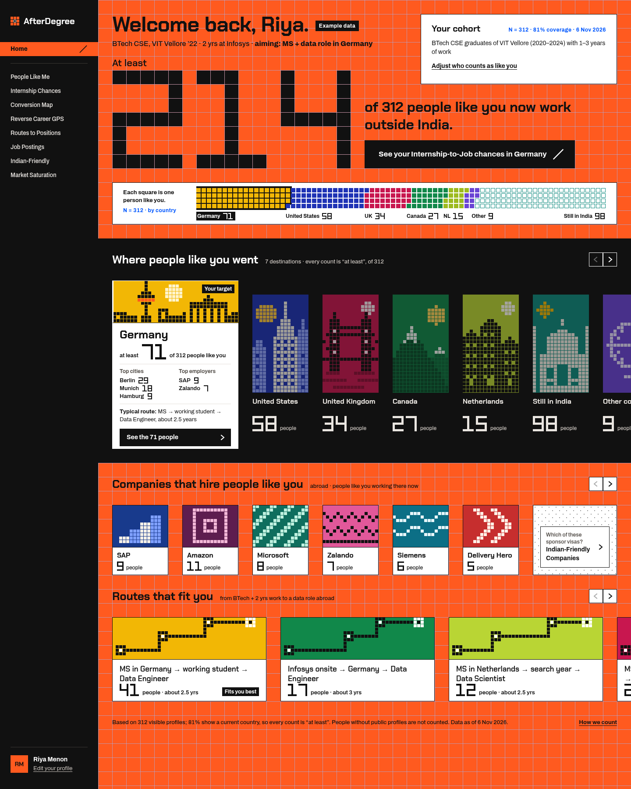
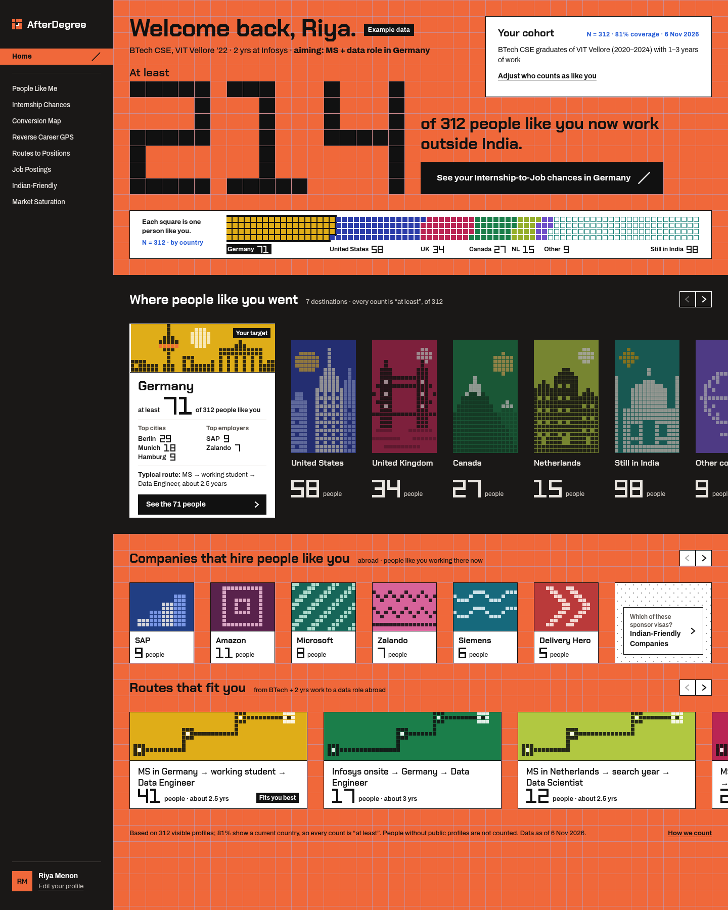
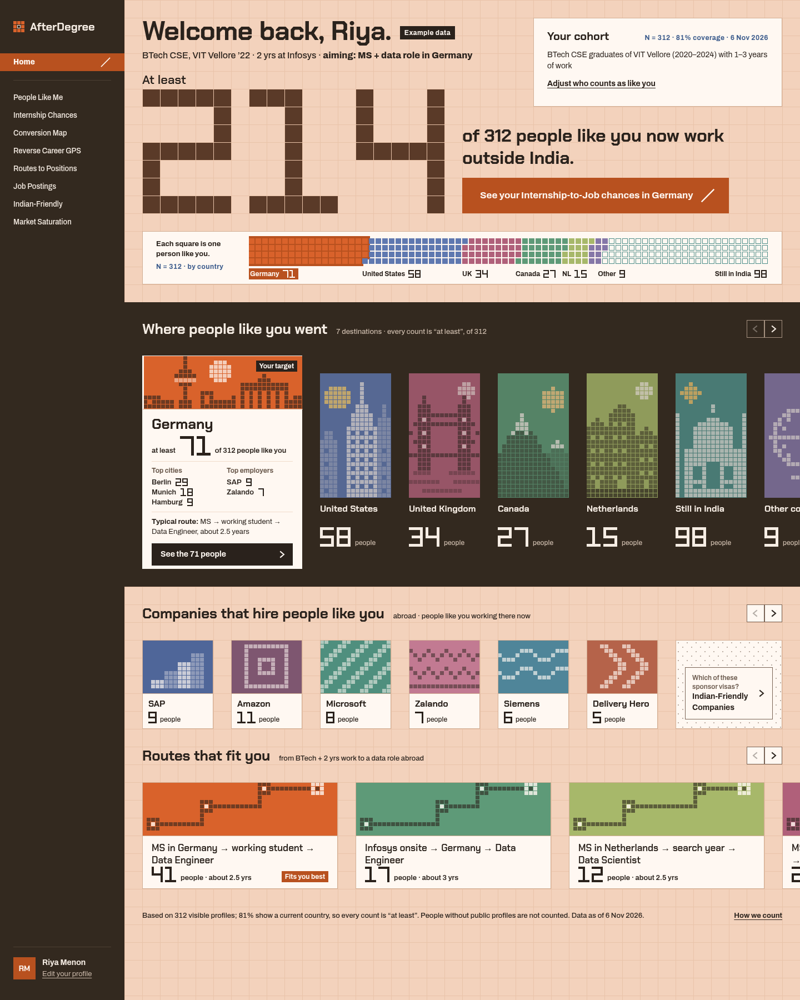
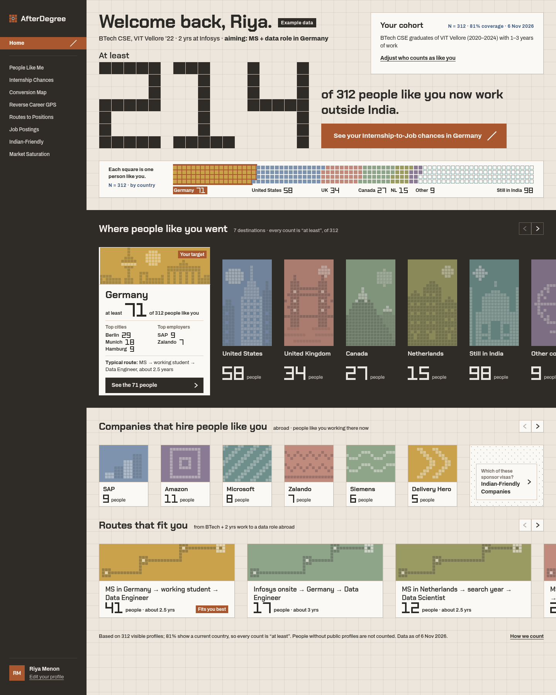
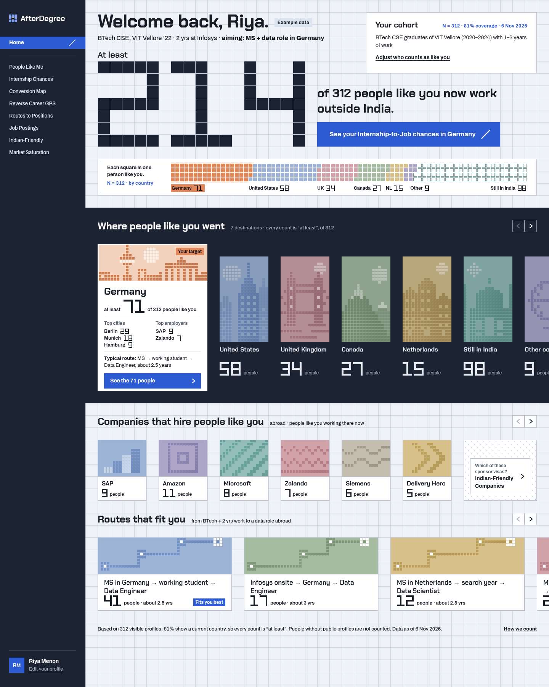
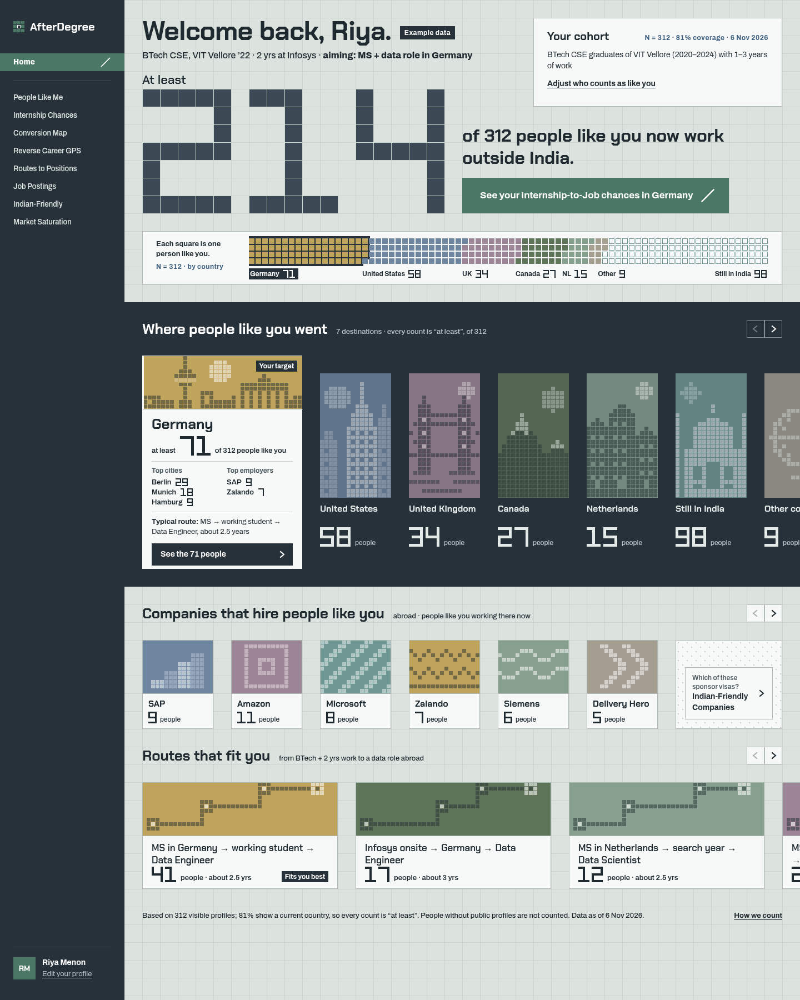
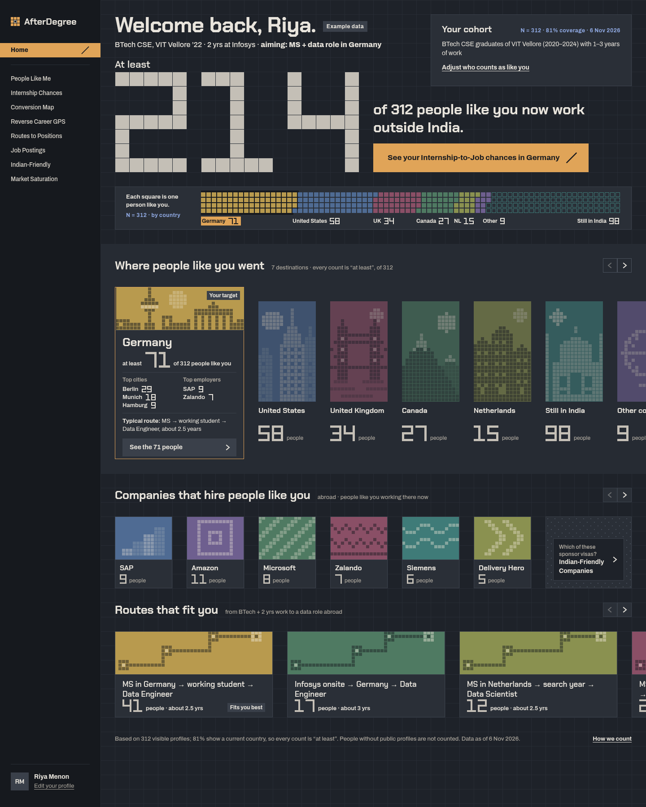

CurrentSaturated orange field, black band, bright tiles

Softer OriginalThe original design with a gentler orange, warmer near-black and slightly calmer tiles

Soft Signal OrangePeach field, orange only as the accent, softened tiles

Paper & ClayWarm stone paper, charcoal band, clay accent, earthy tiles

Blueprint PaperPale grid paper, navy band, Crouwel blue accent, pastel tiles

Slate & SageGrey-green field, slate band, sage accent, cool muted tiles

Night InkDark blue-grey, soft amber accent, dusty tiles